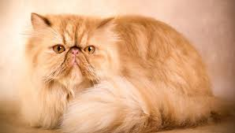

Персидський кіт
Персидські коти відомі своїм довгим пухнастим хутром та лагідною вдачею. Вони часто стають улюбленцями родин завдяки своєму спокійному характеру та гарному зовнішньому вигляду.
Ці коти люблять затишок і часто віддають перевагу м’яким куточкам вдома. Регулярний догляд за шерстю є дуже важливим, адже без розчісування хутро може заплутуватися.